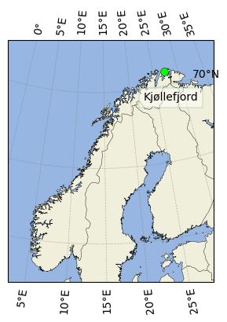
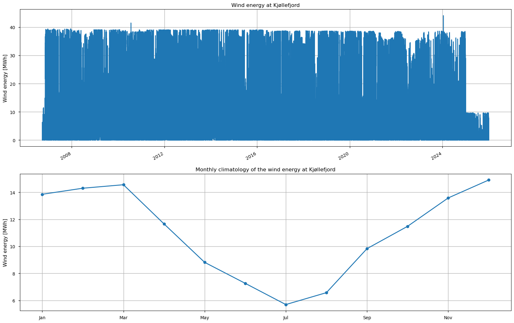
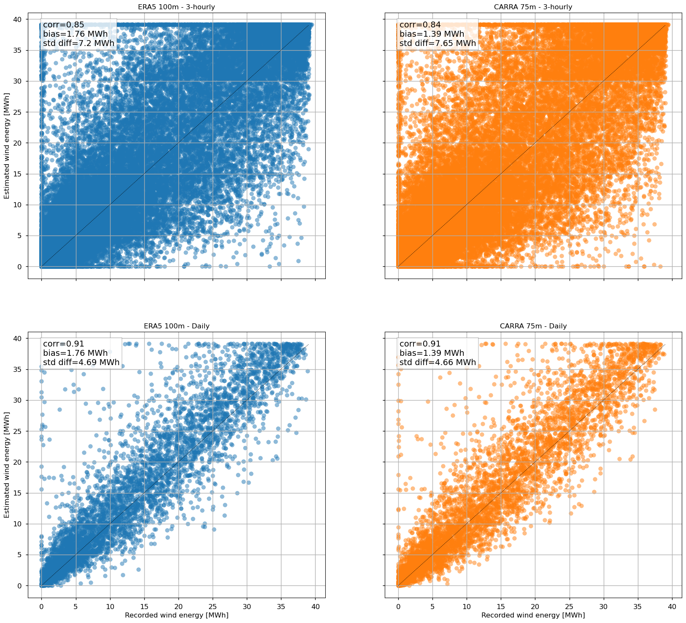

3.1. A first step towards a strategic development of wind farms in northern Norway#
Production date:
Produced by: Fabio Mangini, Nansen Environmental and Remote Sensing Center (NERSC)
🌍 Use case: Reanalysis datasets for an effective renewable energy facility planning in the European Arctic.#
❓ Quality assessment question#
Can ERA5 and CARRA be used to estimate wind energy production at a wind farm in northern Norway?
Renewable energy is central to achieving net‑zero carbon emissions, a key objective for mitigating climate change (e.g., Peters et al., 2017). Wind power, in particular, represents an important alternative to energy sources based on fossil fuels. This is thanks, for example, to its efficiency (Desalegn et al. 2023) and relatively simple installation and maintenance (Tanvir et al., 2025).
Despite its potentials, though, wind energy production is severely affected by its inherent dependence on weather conditions. In this respect, examination of historical wind climate can help identify the most suitable sites where to build wind farms. However, long recording of wind speed are only available at a limited number of locations.
Reanalysis datasets can complement in-situ observations, helping overcome their limited spatial and temporal coverage. Indeed, they offer continuous, gap‑free records derived by assimilation of observations and numerical weather prediction models. Some reanalysis datasets, such as those used in this assessment, also provide information about the state of the atmosphere at prescribed height levels. This makes them well suited for applications related to wind energy production, as wind turbines operate at fixed hub heights.
This assessment explores the ability of two reanalysis datasets, ERA5 (Hersbach et al., 2020), a global reanalysis, and CARRA on height levels, a regional reanalysis for the European Arctic, to estimate the energy production of an onshore wind farm in northern Norway, used as a case study. We propose focusing on an onshore wind farm of northern Norway partly because data about its energy production is readily available online, and partly because northern Norway is located within the eastern domain of CARRA.
📢 Quality assessment statement#
These are the key outcomes of this assessment
The assessment investigates the ability of ERA5, a global atmospheric reanalysis dataset, and CARRA, a regional reanalysis dataset for the Euopean sector of the Arctic, to reconstruct the wind energy genereated by the Kjøllefjord wind farm in northern Norway.
Wind energy estimates derived from both reanalysis datasets exhibit a good qualitative agreement with the observations at 3‑hourly and daily timescales. In this respect, lowering the temporal resolution to daily leads to a modest improvement in the agreement.
ERA5 and CARRA return comparable results, despite ERA5 having a spatial resolution coarser than CARRA both in the horizontal and the vertical.
Additional analysis is needed before this assessment’s results can be generalized, as the differences between CARRA and ERA5 manifests a high geographical variability depending, for example, on local topography and physiography.
📋 Methodology#
This assessment investigates the potential of using wind speed from ERA5 and CARRA to reconstruct the wind energy produced by the Kjøllefjord wind farm, in northern Norway, which is used as a case study. The assessment is based on the observed wind energy produced at the Kjøllefjord wind farm, which is used as ground truth to evaluate the wind energy estimated from ERA5 and CARRA. The estimation is made possible by knowing that the site consists of 17 turbines whose averaged hub height is 70m, and by using the turbine power curve provided at https://www.thewindpower.net/turbine_en_21_siemens_swt-2.3-82-vs.php The power curve defines the relationship between wind speed and the power generated by a single turbine.
For ERA5, wind speed is computed from the zonal and meridional components at 100 m height, whereas for CARRA, wind speeds are retrieved at 75 m. These heights correspond to the height levels in ERA5 and CARRA that are closest to the average turbine hub height at the Kjøllefjord wind farm (70 m). The results are then compared with the observations.
The analysis and results are organized as follows:
2. Description of the datasets
Wind energy at Norwegian wind farms
ERA5
CARRA
Kjøllefjord wind farm
Reanalysis datasets
4. Kjøllefjord wind farm: wind speed from ERA5 and CARRA
5. Kjøllefjord wind farm: wind energy estimates from ERA5 and CARRA
6. Kjøllefjord wind farm: comparison between observations and reanalysis estimates
📈 Analysis and results#
1. Import required packages#
The assessment is based on a set of python packages that are widely used by the climate community, with the addition of the ‘c3s_eqc_automatic_quality_control’ package, which is needed to include the “C3S EQC custom functions” prepared by B-Open.
2. Description of the datasets#
Wind energy at Norwegian wind farms#
The wind energy produced by the Norwegian wind farms is provided by the Norwegian Water Resources and Energy Directorate (abbreviated as NVE, which stands “Noregs vassdrags- og energidirektorat”) through the following URL: https://www.nve.no/media/19691/vindprod2002-2025_kraftverk_utcplus1.xlsx Data are available between 01/01/2002 and 31/12/2025, at a hourly temporal resolution and expressed in MWh. We should note that the wind energy production data are provided in UTC+1 but that, for a comparison with ERA5 and CARRA, this has been converted into UTC.
As previously stated, this assessment examines wind energy production at the Kjøllefjord wind farm. The wind farm is located in northern Norway (Fig. 3.1.1), and consists of 17 turbines (model: Siemems SWT-2.3-82 VS), which have an average hub height of 70m (information found at https://www.nve.no/energi/energisystem/vindkraft-paa-land/data-for-utbygde-vindkraftverk-i-norge/). The site was chosen as a case study partly because it lies within the CARRA-East domain, away from its boundaries, and parly because it shows a relatively stable production history (Fig. 3.1.2). The temporal stability is of interest because it might indicate that variations in production at the Kjøllefjord wind farm are predominantly weather-driven rather than linked to human activity. However, during the most recent years, we note anomalies in wind energy production when compared to the preceding years.

Fig. 3.1.1: Map of Norway with the location and the name of the wind farm selected for this study.
ERA5#
This assessment uses the zonal and meridional components of the wind field at 100m height as provided by the ERA5 global reanalysis dataset (Hersbach et al., 2020). The dataset has a temporal resolution of 1 hour and spatial resolution of 0.25°x0.25°.
CARRA#
This assessment uses wind speed at 75m height as provided by CARRA on height levels, the regional reanalysis dataset for the European sector of the Arctic. The data have a temporal resolution of 3 hours, and horizontal spatial resolution of 2.5km. In the vertical, CARRA on height levels consists of 15 levels, ranging from 15m to 500m.
3. Download datasets#
Kjøllefjord wind farm#
As previously stated, this assessment examines the relationship between the wind speeds provided by two reanalysis datasets, ERA5 and CARRA, and the wind energy generated at the Kjøllefjord wind farm. To familiarise ourselves with the characteristics of the wind farm’s production, we first summarise its properties using the hourly time series of wind energy and its monthly climatology, which has been computed to show the seasonal cycle (Fig. 3.1.2).
Wind energy production data are available from 24/09/2006 to 31/12/2025. The hourly timeseries show an overall consistent evolution throughout most of this period, with values reaching up to approximately 40 MWh. The timeseries do not show a marked inter-annual variability, but the monthly climatology reveals a clear seasonal cycle, with values ranging from around 6 MWh in July to about 15 MWh in winter. The lower summer values possibly reflect weaker winds during that season.
We should note that the production record exhibits anomalous behaviour at the very beginning of the time series (i.e., in the last months of 2006) and again from around early 2021 onwards. For this reason, the analysis is restricted to the period 01/01/2007 to 31/12/2020.

Fig. 3.1.2: (Above) Timeseries of wind energy, in MWh, produced each hour at the Kjøllefjord wind farm. (Below) Corresponding monthly climatology.
Reanalysis datasets#
name='carra1_height'
100%|██████████| 228/228 [00:13<00:00, 16.78it/s]
name='era5'
100%|██████████| 456/456 [00:12<00:00, 36.81it/s]
/data/common/miniforge3/envs/wp5/lib/python3.12/site-packages/earthkit/data/utils/kwargs.py:59: UserWarning: In xarray_open_dataset_kwargs backend_kwargs, overriding the default value (squeeze=False) with squeeze=True is not recommended.
warnings.warn(
4. Kjøllefjord wind farm: wind speed from ERA5 and CARRA#
5. Kjøllefjord wind farm: wind energy estimates from ERA5 and CARRA#
To assess how well ERA5 and CARRA reproduce the wind energy generated at the Kjøllefjord wind farm, we first need to estimate the wind energy that would result from wind speed provided by the reanalysis datasets. This estimation is based on the knowledge that the Kjøllefjord wind farm consists of 17 Siemens SWT‑2.3‑82 VS turbines (information found at https://www.nve.no/energi/energisystem/vindkraft-paa-land/data-for-utbygde-vindkraftverk-i-norge/). The turbine model is associated with a power curve (available at https://www.thewindpower.net/turbine_en_21_siemens_swt-2.3-82-vs.php), which is used to convert wind speed into energy. The resulting turbine-level output is then multiplied by the total number of turbines.
6. Kjøllefjord wind farm: comparison between observations and reanalysis estimates#
In Fig. 3.1.3, we note a linear relationship between the observed and reconstructed wind energy generated at the Kjøllefjord wind farm between 01/01/2007 and 31/12/2020, with both the observed and reconstructed wind energy production varying within a comparable range, from 0 to approximately 40MWh, and being characterized by a linear correlation exceeding 0.8.
We note, however, some discrepancies between them. Notably, the reconstructed wind energy production from both ERA5 and CARRA appears to exceed the observed ones, as indicated by the positive biases. Despite the differeces, though, the overall results indicate that both the wind speed from ERA5 and CARRA have potential in reconstructing the wind energy production at the site.
The comparison between the upper and the lower subplots indicates that, as we decrease the temporal resolution of the datasets from 3-hourly to daily, we obtain a less noisy relationship, an improvement in the correlation coefficients by a few decimal points, and of the standard deviation of the differences by few MWh. This results is consistent with the assumption that the daily-averaging filters out part of the random noise prensent in the reanalysis datasets.
The comparison between the subplots on the left and the right suggests that CARRA’s finer spatial resolution than ERA5, both horizontally and vertically, translates into only a partial better agreement with the observations. For instance, at 3-hourly temporal resolution, CARRA exhibits smaller biases than ERA5, but shows comparable correlations and a larger standard deviation of the differences relative to the observations. Interestingly, though, when daily averaged data are considered, the standard deviation of the differences appears to be less sensitive to the choice of reanalysis dataset.
We should highlight that this result cannot be easily generalized. A preliminary literature review shows that the Kjøllefjord wind farm is located in a region where the differences in 10m wind speed between CARRA and ERA5 is at a local minimum (Fig. 1c in Køltzow et al., 2022). Despite the figure showing results for the 10m height, this might explain why the two datasets return comparable results when it comes to wind energy production in the region.
In this respect, future work might consider additional wind farms within CARRA’s domain, and might possibly investigate the reasons why the finer spatial resolution of CARRA does not necessarily translate into a greater agreement with the observations.

Fig. 3.1.3: Relationship between the wind energy generated by the selected wind farm and the wind energy estimated from ERA5 and CARRA. The comparison is presented using scatter plots arranged in a 2×2 grid. The upper‑left and upper‑right panels show, respectively, the comparison between observed wind energy and the estimates from ERA5 and from CARRA at a 3‑hourly resolution. The lower panels present the same comparison, but using daily‑averaged values. The upper-left corner of each subplot shows the bias of the estimated wind energy production with respect to the observed one, the standard deviation of their difference, and the linear correlation between the two time series.
ℹ️ If you want to know more#
Key resources#
CDS dataset used:
Code libraries used:
C3S EQC custom functions,
c3s_eqc_automatic_quality_control, prepared by B-Open
Additional resources:
References#
Desalegn, B., Gebeyehu, D., Tamrat, B., Tadiwose, T. 2023. Wind energy-harvesting technologies and recent research progresses in wind farm control models. Front. Energy Res., 11, p. 81, 10.3389/FENRG.2023.1124203/BIBTEX.
Hersbach, H., Bell, B., Berrisford, P., Hirahara, S., Horányi, A., et al. 2020 The ERA5 global reanalysis. Q.J.R. Meteorol. Soc. 146, 1990–2049. https://doi.org/10.1002/qj.3803
Køltzow, M., Schyberg, H., Støylen, E., & Yang, X. (2022). Value of the Copernicus Arctic Regional Reanalysis (CARRA) in representing near-surface temperature and wind speed in the north-east European Arctic. Polar Research, 41. https://doi.org/10.33265/polar.v41.8002
Peters, G. P., Andrew, R. M., Canadell, J. G., Fuss, S., Jackson, R. J., et al. 2017. Key indicators to track current progress and future ambition of the Paris Agreement. Nat. Clim. Change 7, 118–122.
Tanvir, M. S., Etminan, A. 2025. Comparative analysis of offshore and onshore wind turbines: Efficiency, design, and environmental impact. Wind Eng., 50, 200–215. https://doi.org/10.1177/0309524X251386646